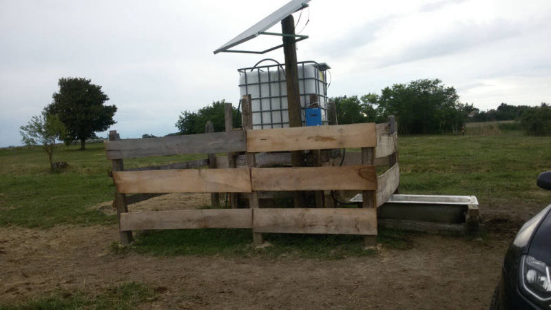
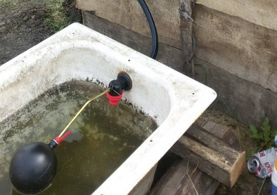
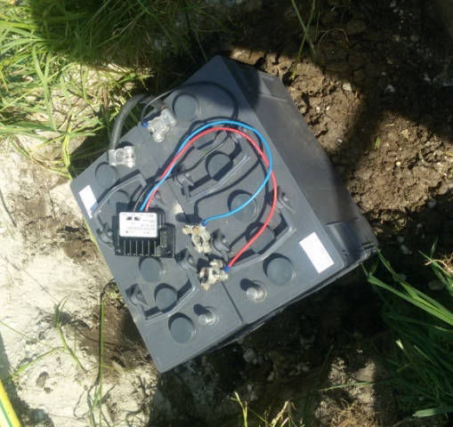
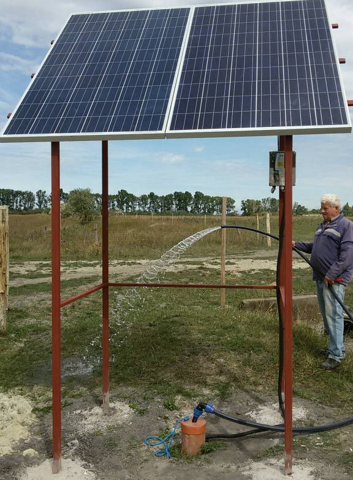
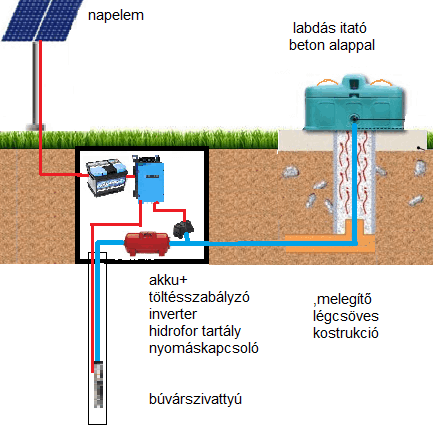

Tartályos itató 20 marhához, 1 napelememmel
Nagyméretű Jakab (WC) töltőszelep (1 col)
Akkumulátor töltéskiegyenlítővel
Érzékeny +/- 4 cm vízszintszabályzó
 Akkus befedése földtakaráshoz
Akkus befedése földtakaráshozNagyteljesítményű tartályos-akkus itató
Itatóvályú IBC-tartállyal, szinttartó szeleppel
 Négylábú állvány, csőkúttal, itatáshoz
